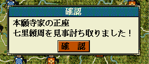

int カスタム::On_カスタム条件(string 条件名, カスタム条件パラメタ型 パラメタ) {
if ( 条件名 == "AS条件::メイン::暗殺受動者死亡可否" ) {
}
// 変更しない場合-1
return -1;
}

int カスタム::On_カスタム条件(string 条件名, カスタム条件パラメタ型 パラメタ) {
if ( 条件名 == "AS条件::メイン::暗殺受動者死亡可否" ) {
int 暗殺する側BushouID = パラメタ.整数1-1;
int 暗殺され側BushouID = パラメタ.整数2-1;
int 予定されている結果 = パラメタ.整数3;
if ( 0 <= 暗殺する側BushouID && 暗殺する側BushouID < 最大数::武将情報::配列数 &&
0 <= 暗殺され側BushouID && 暗殺され側BushouID < 最大数::武将情報::配列数 ) {
デバッグ出力<<Get_名前(暗殺する側BushouID)<< endl;
デバッグ出力<<Get_名前(暗殺され側BushouID)<< endl;
デバッグ出力<< 予定されている結果 << endl;
// 相手より年齢が上なら、必ず暗殺成功
if ( Get_武将年齢(暗殺する側BushouID) > Get_武将年齢(暗殺され側BushouID) ) {
return TRUE; // 死亡確定
}
}
}
// それ以外は条件を変えない。
return -1;
}